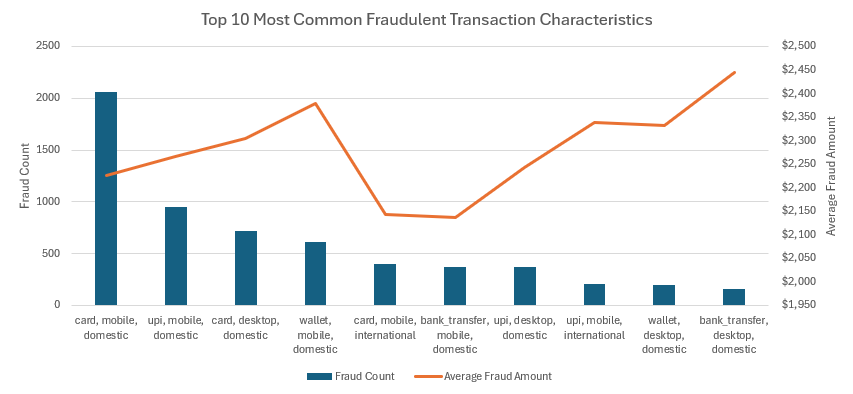
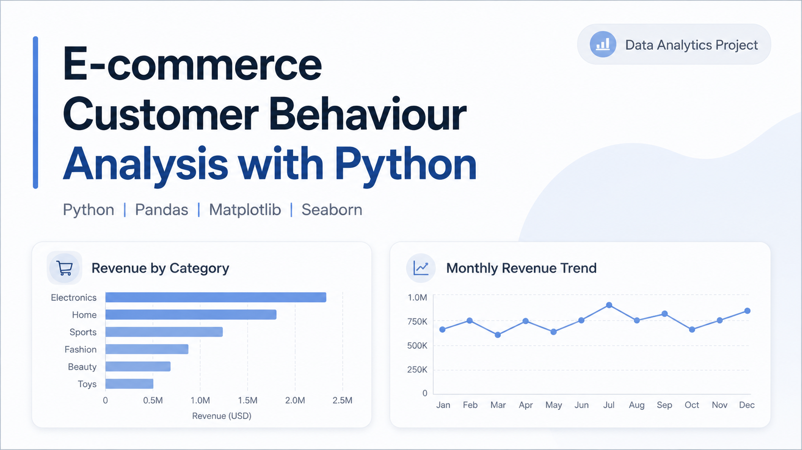
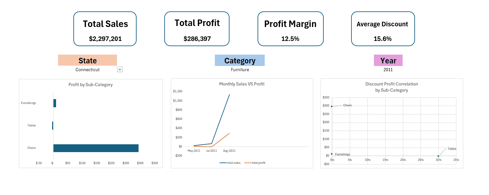
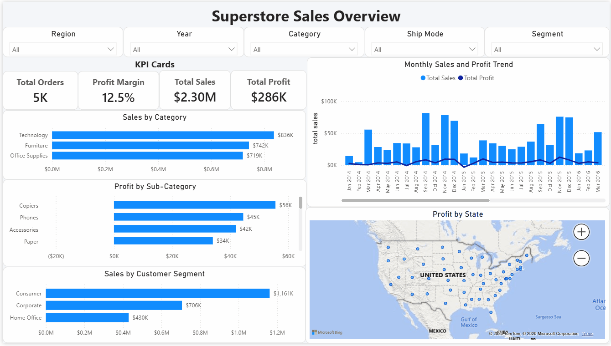
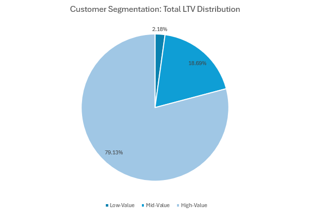
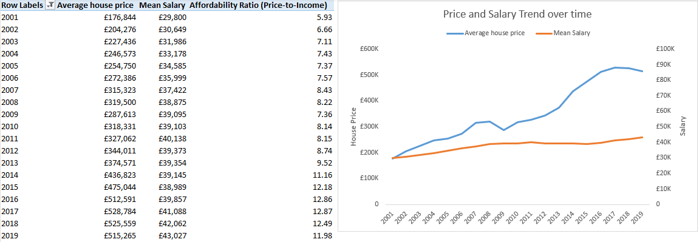

Data Analysis
Data cleaning, KPI tracking, trend analysis, customer segmentation, profitability analysis, retention analysis
London-based junior analyst portfolio
I'm a Business Management graduate based in London, building practical data projects across SQL, Excel, Power Query and Power BI. My work focuses on cleaning data, identifying trends, building dashboards and turning analysis into clear recommendations for business, customer and operational decisions.
Open to junior analyst roles across insight, marketing, commercial and operations teams.
About
I have a Business Management background and hands-on analytics experience through portfolio projects using SQL, Excel, Power Query and Power BI. I'm interested in e-commerce performance, customer behaviour, dashboard design, commercial insight and how clear analysis can support better business decision-making.
Skills
Data cleaning, KPI tracking, trend analysis, customer segmentation, profitability analysis, retention analysis
SQL, PostgreSQL, Excel, Power Query, Power BI, Python, Google Sheets, VS Code
PivotTables, charts, Excel dashboards, Power BI dashboards, interactive filters, reporting
Customer behaviour, e-commerce performance, commercial recommendations, operational reporting, stakeholder communication
Featured Projects

Analysed two years of transactional e-commerce data to understand customer lifetime value, churn, repeat purchases and revenue contribution.
Produced recommendations for retention, upselling and customer segmentation strategies.

Analysed a synthetic e-commerce transaction dataset to explore sales performance, customer behaviour, category performance and monthly trends.
Produced practical observations around high-value customers, category performance, returns and revenue movement for portfolio practice.

Built an interactive Excel dashboard to analyse sales performance, profitability and discount impact across products, states and time periods.
Helped turn retail data into clear commercial insights for pricing and profitability decisions.

Rebuilt the Superstore sales analysis as an interactive Power BI report covering sales, profit, discount impact and regional performance.
Turned spreadsheet-based sales reporting into a scalable BI dashboard for faster performance review and decision-making.

Explored digital transaction data to identify suspicious fraud patterns, high-risk payment channels and behavioural indicators.
Showed how SQL can support fraud monitoring, risk detection and investigation prioritisation.

Analysed London housing data to explore property prices, affordability, crime impact and housing demand.
Presented complex market data in a clear format for buyers, investors and decision-makers.
Experience
Volunteering Experience
Currently Learning